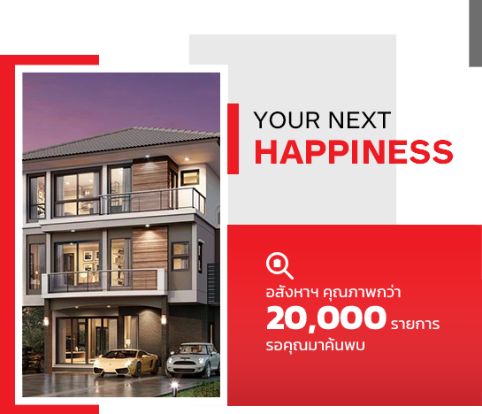

รวมที่อยู่อาศัย
คุณสามารถเลือกประเภทของอสังหาริมทรัพย์ที่ต้องการ
อสังหาริมทรัพย์แนะนำ
อสังหาริมทรัพย์มาใหม่
รวมโครงการ
SERVICES
อยากซื้ออยากขายอสังหาฯปรึกษาเรา
บริการครบจบทุกขั้นตอน
ตั้งราคาแบบมืออาชีพ
การตลาดครบวงจร
ฐานผู้ซื้อมีจำนวนมาก
มีเครือข่ายตัวแทนช่วยกันขายกว่า 1,000 คน
จัดการดูแลเรื่องสินเชื่อ เพื่อบ้านในฝันเป็นจริง
ดูแลการโอนให้จบครบทุกขั้นตอน
บทความน่ารู้
ทำความรู้จักและเข้าใจ “อสังหาริมทรัพย์” กันให้มากขึ้น
ดูทั้งหมด